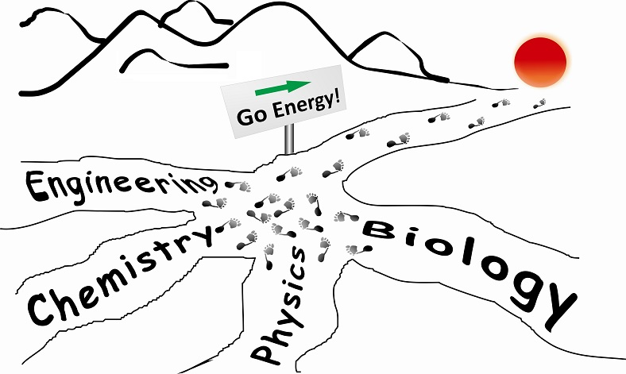

Welcome to Rui's Group
Postdoctor and research associate positions are available! Join Us!
Research

Our research focus on photoelectric materials and devices
Selected Publications:
Click here to visit a full list of publications
Advanced Materials: Buried Interfaces in Halide Perovskite Photovoltaics
Understanding the fundamental properties of buried interfaces in perovskite photovoltaics is of paramount importance to the enhancement of device efficiency and stability. Studies to date have focused on the top surfaces of the polycrystalline perovskite films, yet non-radiative losses that hinder the power outputs are known to exist at the buried interfaces due to the accumulation of deep-level trap states. However, exploring these issues will become complex when the excess lead halide accumulates at the buried interface featuring non-exposed characteristics. In this work, the buried mysteries in full device stacks will be unveiled by a series of dedicated techniques including the lift-off strategy, the in-situ buried mapping spectroscopy, and the cross-sectional high-resolution microscopy. By establishing the microstructure–property relations, the basic losses at the contact interfaces are systematically presented, which are induced by both the sub-microscale extended imperfections and lead-halide inhomogeneities. Furthermore, an in-depth mechanism for the most popular ammonium-halide post-treatment is explored by the exploiting time-related confocal spectroscopic imaging and materials characterizations. The surface ammonium halides could penetrate from the top surface to the bulk, especially the buried interface, and we called the molecule-assisted microstructural reconstruction. Both the bulk and interfacial losses can be considerably mitigated by the use of the passivation-molecule-assisted microstructural reconstruction, which unlocks the full potential for improving device performance. The methodology reported in this work is expected as the starting point to uncover the properties of the buried interfaces of various perovskite compositions and device structures for a broad range of applications including solar cells, light-emitting diodes, photodetectors, and other perovskite optoelectronics.
Science
Luo, D. Y.; Yang, W. Q.; Wang, Z. P.; Sadhanala, A.; Hu, Q.; Su, R.; Shivanna, R.; Trindade, G. F.; Watts, J. F.; Xu, Z. J.; Liu, T. H.; Chen, K.; Ye, F. J.; Wu, P.; Zhao, L. C.; Wu, J.; Tu, Y. G.; Zhang, Y. F.; Yang, X. Y.; Zhang, W.*; Friend, R. H.; Gong, Q. H.; Snaith, H. J.*; Zhu, R.*; Science, *340*, 1442-1446, 2018.

Advanced Energy Materials
Stable formamidinium-based berovskite solar cells via in situ grain encapsulation.
Liu, T. H.; Zhou, Y. Y.*; Li, Z.; Zhang, L.; Ju, M. G.; Luo, D. Y.; Yang, Y.; Yang, M. J.; Kim, D. H.;Yang, W. Q.; Padture, N. P.; Beard, M. C.; Zeng, X. C.; Zhu, K.*; Gong, Q. H.; Zhu, R.*; Advanced Energy Materials, 8, 1800232, 2018.
Reviewer for:
| Science | Advanced Materials | Advanced Energy Materials | Advanced Functional Materials |
| JACS | Nature Communications | Nano Letters | Chemical Science |
| Small | Nanoscale | Journal of Materials Chemistry | Chemistry of Materials |